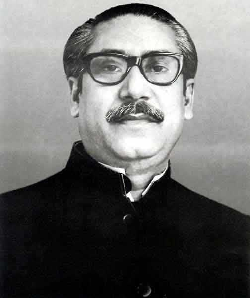

Copyright © 2019, The Great Bangladesh
All Rights Reserved
Developed & maintained by Jamil Ahsan
Bangladesh, to the east of India on the Bay of Bengal, is a South Asian country marked by lush greenery and many waterways. Its Padma (Ganges), Meghna and Jamuna rivers create fertile plains, and travel by boat is common. On the southern coast, the Sundarbans, an enormous mangrove forest shared with Eastern India, is home to the royal Bengal tiger.

| bangladesh Flag | Bangladesh Map |
|---|
The violent crackdown by the Pakistan Army led to Awami League leader Sheikh Mujibur Rahman declaring East Pakistan's independence as the state of Bangladesh on 26 March 1971. Most Bengalis threw their support behind this move although Islamists and Biharis opposed this and sided with the Pakistan Army instead.
| Bangladesh Before 1971 | Bangladesh After 1971 | Digital bangladesh |
|---|
The Mukti Bahini (Bengali: মুক্তি বাহিনী, translates as 'freedom fighters', or liberation army), also known as the Bangladesh Forces, was the guerrilla resistance movement formed by the Bangladeshi military, paramilitary and civilians during the War of Liberation that transformed East Pakistan into Bangladesh in 1971

| Hamidur Rahman | Matiur Rahman | Mohammad Ruhul Amin | Mohiuddin Jahangir |
|---|

| Mostafa Kamal | Munshi Abdur Rouf | Nur Mohammad Sheikh |
|---|
Political History of Bangladesh: Political History of Bangladesh after independence begins in 1971 with the independence of Bangladesh from Pakistan.In 1947 the subcontinent became to independent. ... Awami League made a great role in the movement of Bangladesh liberation war in 1971.

| Bangabandhu Sheikh Mujib | Ziaur Rahman | A K Fazlul Hoque | Hamid Khan Vashani |
|---|
Here we have introduced some of Bangladeshi business person who are in the leading position in Bangladesh business.


| M Anis Ud Dowla | Samson H Chowdhury | Syed Manzur Elahi | Sayem Sobhan Anvir |
|---|
Sports and games form an integral part of Bangladeshi’s life. In the villages one might see a passel of kids kicking a football, or in some dusty alley one might see kids playing cricket. Though Bangladesh is not a major sporting power in any sense, Bangladeshi athletes and sportspersons have brought her many laurels.

| Shakib Al Hasan | Jamal Bhuiya | Siddikur Rahman | Asif Hossain Khan |
|---|